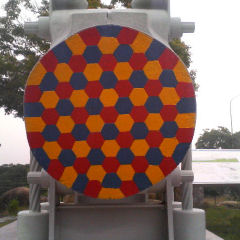
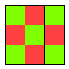
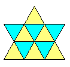
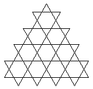
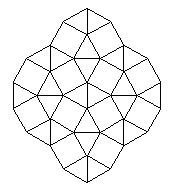
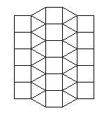
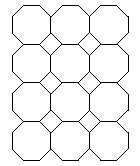

ご覧の通り
蜂の巣型は
三色で塗り分けられる。
その他の型についても
考えてみよう。
なお、以下の図は
一部分であり
本当は正多角形が
無限に並んで
平面を充填している
事をイメージして下さい。
市松型は
二色で
塗り分けられる。

鱗の型も
二色で可能。

籠目型はどうか？

手裏剣型は？

鉛筆の型は？

折敷の型は？

参考文献
はじめての
多面体おりがみ
川村みゆき著
秋山仁の
遊びからつくる数学
秋山仁
吉永良正共著
数学の楽しみ
テオニ・パパス著
安原和見訳